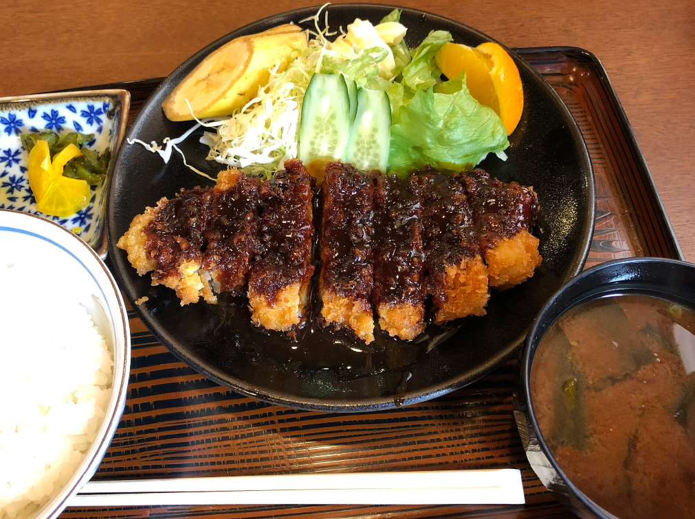
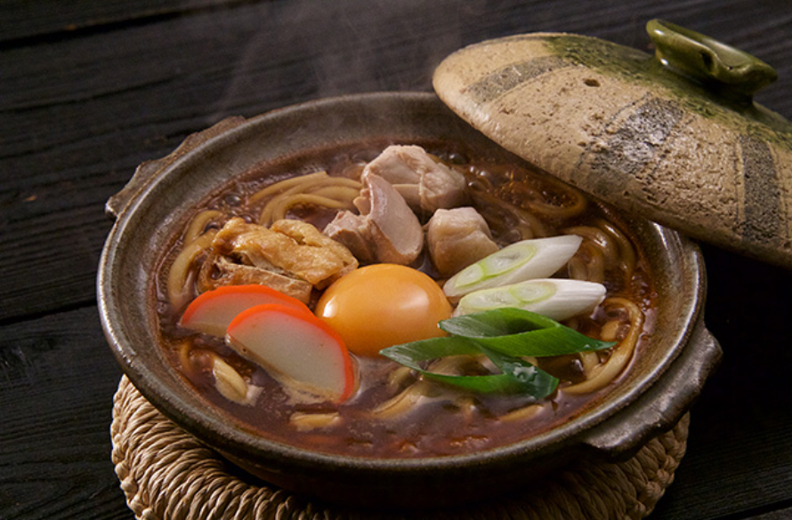
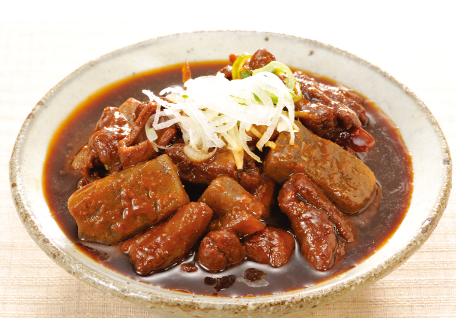
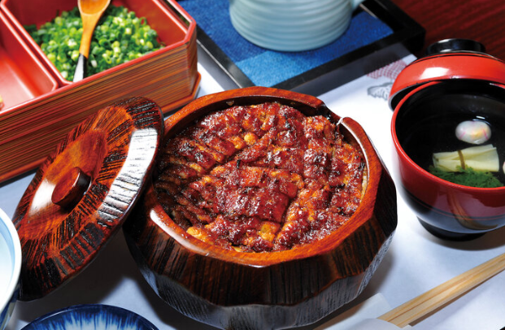
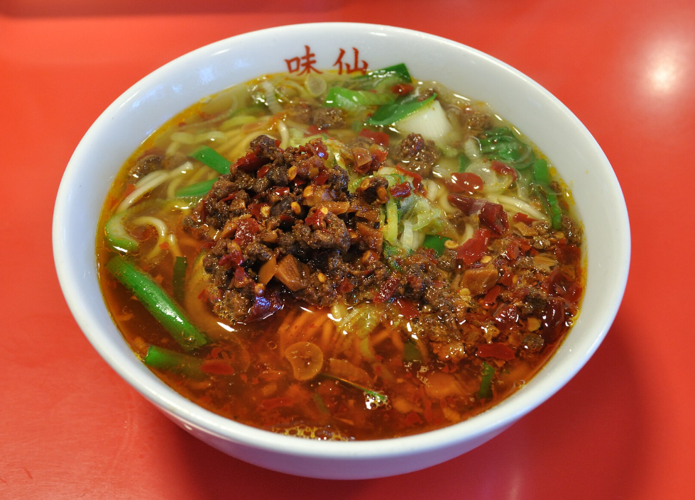
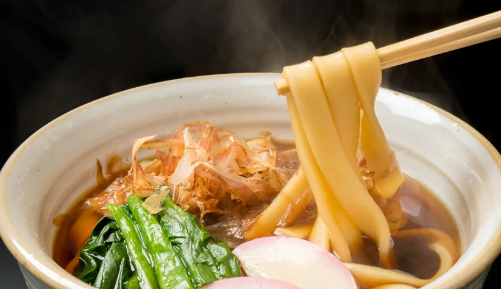
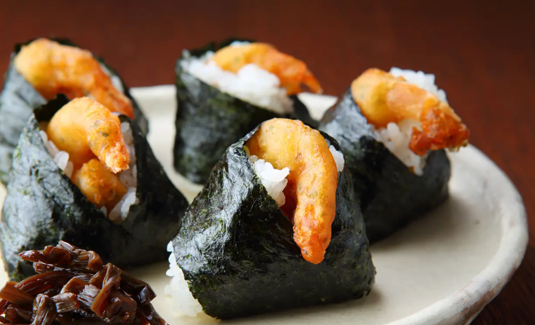

グルメ
「なごやめし」の総称がつくほど、美味しいものが多い名古屋。味噌を使用した料理やひつまぶし、手羽先などの和から、あんかけスパや鉄板ナポリタンなどの和洋折衷までさまざまなジャンルのグルメが旅人を迎えてくれます。

味噌カツ
揚げたての豚カツに、豆味噌（赤味噌）をベースにした甘辛い特製ダレをかけた日本・愛知県名古屋市の代表的な名物料理。

味噌煮込みうどん
愛知県を代表する郷土料理で、八丁味噌の濃厚な汁に、塩を使わず茹でずに煮込んだコシの強い硬い生麺を入れて土鍋でグツグツと煮込んだ料理。

どて煮
牛すじや豚モツを豆味噌や赤味噌で甘辛く煮込んだ日本の郷土料理です。鍋のふちに味噌を土手のように盛って煮込んだ調理法が名前の由来とされています。

ひつまぶし
おひつに盛られたご飯のうえに、短冊切りにされたうなぎの蒲焼きが盛られた名古屋の代表的なグルメです。
名古屋コーチン
引き締まった肉質は弾力に富み、歯ごたえがある「名古屋コーチン」。昔ながらのかしわ肉のように、噛みしめるたびにコクのある旨みが口のなかに広がります。

台湾ラーメン
台湾の料理ではなく、愛知県名古屋市の中華料理店「中国台湾料理 味仙」が発祥の日本ローカル麺料理です。

きしめん
幅広で薄く平たい形状をした愛知県名古屋市の代表的な麺料理（うどんの一種）です。
鉄板スパ
熱々に熱した鉄板の上にケチャップ味のスパゲティ（ナポリタン）をのせ、周囲に溶き卵を流し込んだ名古屋発祥の有名ご当地グルメです。

天むす
海老の天ぷらを具にしたおにぎり。三重県発の名古屋めしの一つとして知られる。